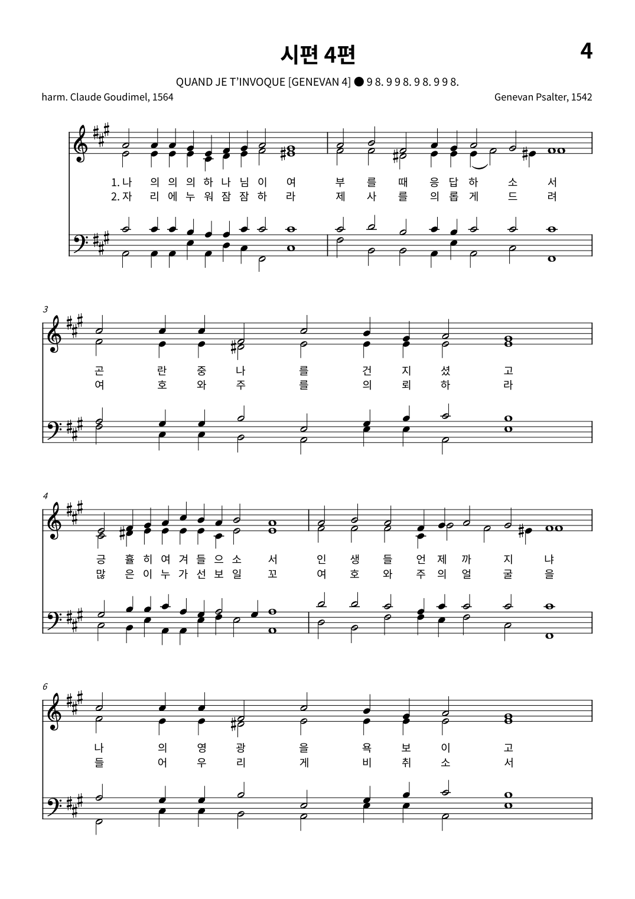

시편 4편
QUAND JE T’INVOQUE [GENEVAN 4] · 9 8. 9 9 8. 9 8. 9 9 8.
곡조: Genevan Psalter, 1542 · 화성: Claude Goudimel, 1564 · 가사: 개역한글판 시편 4편 편역(AI 초벌 편역판 · 신학 감수 전) · 2절
악보 PDF MusicXML(출력용) MusicXML(반주용, 전주·반복 포함) 개역한글 시편 4편 읽기

가사
1절
나의 의의 하나님이여
부를 때 응답하소서
곤란 중 나를 건지셨고
긍휼히 여겨 들으소서
인생들 언제까지냐
나의 영광을 욕보이고
허사를 좋아하는고
주 경건한 자 택하셨고
부를 때 주 들으시리라
떨며 범죄치 말지라
나의 의의 하나님이여
부를 때 응답하소서
곤란 중 나를 건지셨고
긍휼히 여겨 들으소서
인생들 언제까지냐
나의 영광을 욕보이고
허사를 좋아하는고
주 경건한 자 택하셨고
부를 때 주 들으시리라
떨며 범죄치 말지라
2절
자리에 누워 잠잠하라
제사를 의롭게 드려
여호와 주를 의뢰하라
많은 이 누가 선 보일꼬
여호와 주의 얼굴을
들어 우리게 비취소서
내 맘에 두신 기쁨이
풍년의 기쁨보다 크니
내가 평안히 눕고 자리
오직 주 날 지키시니
자리에 누워 잠잠하라
제사를 의롭게 드려
여호와 주를 의뢰하라
많은 이 누가 선 보일꼬
여호와 주의 얼굴을
들어 우리게 비취소서
내 맘에 두신 기쁨이
풍년의 기쁨보다 크니
내가 평안히 눕고 자리
오직 주 날 지키시니